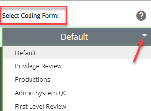
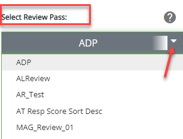

Click the arrow to open the drop-down menu. They are in alphabetical order.


The related tag palette will load giving you the option to apply different tags. When in a review pass, the related document set, coding form and tag palette load for the selected review pass. For more information on working with coding forms or tag palettes, see
|
|
Note: When changing review passes, the previous batch is checked out and available to other users if the default batch checkout time has expired and the batch is not completed. If the batch checkout time did not expire, the batch is still available, and work can continue on that batch. |